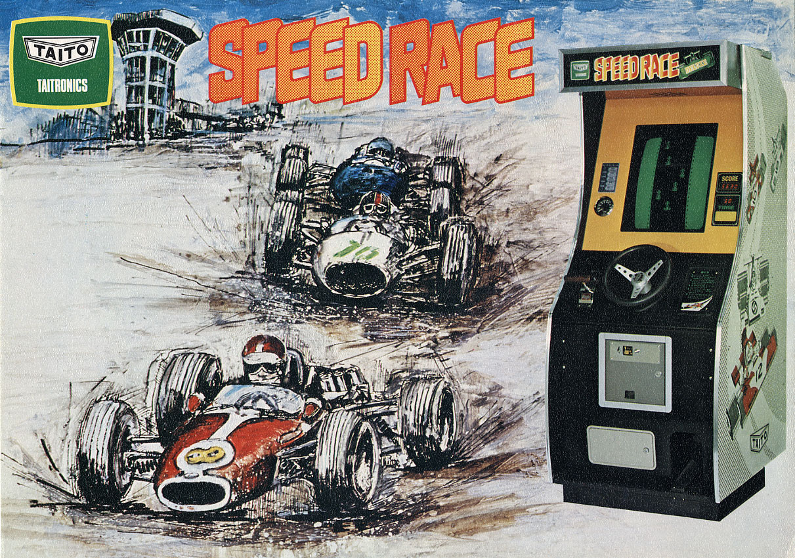
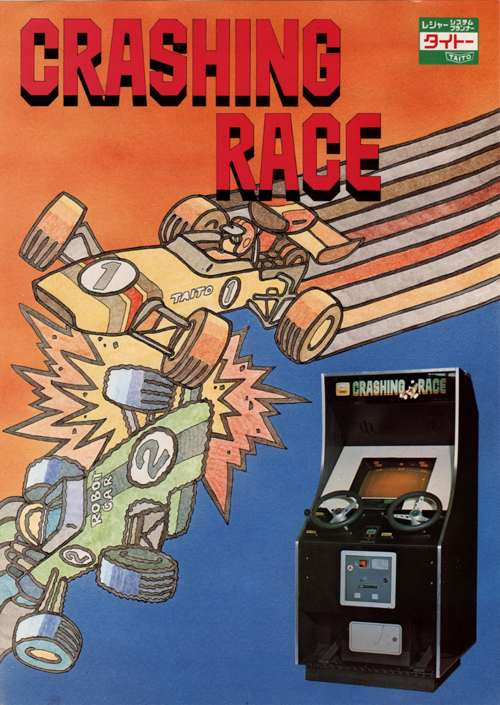

Зарождение
История автосимуляторов началась в клубах с игровыми автоматами. Именно там зародились такие характеристики современных игр, как вид из кабины или сверху сзади, игра вдвоём и против компьютера, тактильный отклик при авариях.
Отдельно стоит сказать про экраны. Изображения на экран в играх, похожих на современные автосимуляторы, изначально проецировались с пластиковых подложек. Позже экраны в большинстве гоночных автоматов заменили на телевизионные. Такие аппараты так и называли в СССР – «автоматы игровые телевизионные». Например, в «Авторалли-М» телевизор лежал горизонтально внутри устройства. Давайте посмотрим на эволюцию игр через конкретные примеры.
Американская Atari оказала влияние на зарождение всей индустрии видеоигр. Компания была основана в 1972 году, её первым продуктом стал Pong. Этот игровой автомат состоял из чёрно-белого телевизора, аппаратуры для игры и монетоприёмника. Вторым после Pong аркадным автоматом от Atari стал автомат с космическими гонками – Space Race. Для победы нужно было пройти сквозь астероиды, не потеряв корабль. Игра предусматривала одиночный режим или одновременную борьбу двух игроков. Управление джойстиком осуществлялось в одной плоскости: вверх и вниз. В аналоге игры от компании Taito, Astro Race, джойстик имел четыре позиции: появилась возможность двигаться в четырёх направлениях.
Автоматов Speed Race компании Taito было выпущено около семи тысяч штук. Это был один из самых популярных на тот момент автоматов с гонками — хотя и конкуренция была не очень высокой. Автомобиль поворачивал в одной плоскости. Справа от руля — рычаг переключения передач, под ногой — кнопка газа. В версии для Австралии рычаг поместили слева.
Цель — не врезаться в другие автомобили во время гонки. Со временем скорость увеличивается, а соперников становится больше.
Игра Gran Trak 10 от Atari, выпущенная в 1974 году, представляла собой гонку по трассе с видом сверху. Машина была больше похожа на квадрат, чем на болид.
Если в Speed Race нужно было объезжать соперников, то в Crashing Race для заработка очков нужно было врезаться в них. Эта игра 1976 года выпуска продолжила линейку гоночных аркадных автоматов от Taito. Система была рассчитана на двух игроков.
Все предыдущие игры были монохромными, графика в них соответствовала возможностям компьютеров того времени. Чтобы сделать изображение более реалистичным, цветным и ярким, Atari и Namco при разработке автомата F-1 в 1976 году использовали иной подход.
Вид в игре был от третьего лица, сверху сзади за автомобилем, что уже приближает нас к современным вариантам автосимуляторов.
Людям всегда нужно разнообразие, к одним и тем же гонкам они привыкают. Atari в 1978 году решила, что хорошеей идеей будет управлять не болидом «Формулы-1», а пожарной машиной. Можно было играть вдвоём, при этом один игрок сидел в кресле, второй — управлял с помощью второго руля, стоя за спиной первого игрока. Управление осуществлялось во всех направлениях. Нужно было объезжать лужи машинного масла и избегать столкновений с обочиной, а также следить за уровнем топлива.
Где автомобили, там и мотоциклы: Sega в 1976 году начала продавать игровой автомат FONZ с мотогонками. Нужно было уклоняться от других мотоциклов и иных препятствий. Во время столкновений руль вибрировал — появился обычный для нас сегодня тактильный отклик.
В игре Road Champion автомобили соперников перестали быть обычным препятствием. Здесь уже они управлялись компьютером. Нужно было дойти до финиша первым.
Но зачем проецировать пластиковые изображения или использовать не очень красивую на тот момент компьютерную графику, если можно использовать обычную видеоплёнку? Этим вопросом задались разработчики из Kasco, создавая гонки-боевик The Driver. В автомат устанавливалась 16-миллиметровая киноплёнка. Это напоминает первые примеры виртуальной реальности, а именно — шлем Sensorama 1956 года.
В The Driver игрок с помощью руля и педалей повторял действия автомобиля из фильма, который показан на экране.
Эталонной игрой, породившей множество подражателей, стала Pole Position от Atari 1982 года. Здесь использован вид «с высоты птичьего полёта», который стал преимущественно использоваться для гонок в будущем.
В игре была всего одна трасса — Фудзи Спидвей в Японии, на которой проводили чемпионаты «Формулы-1». Это добавляло игровому процессу реалистичности.
ВЕщё одной гоночной игрой от Atari была Indy 800. Наиболее интересным в этом автомате является мультиплеер — здесь сражались на трассе не два игрока, а сразу до восьми человек.